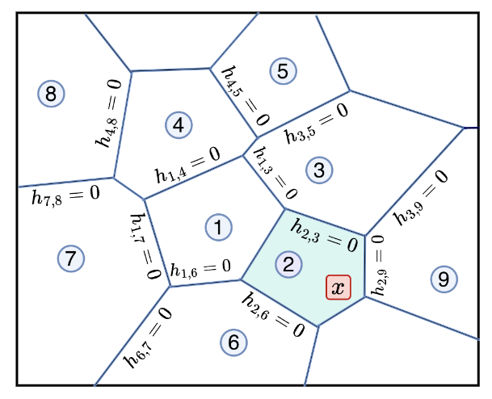
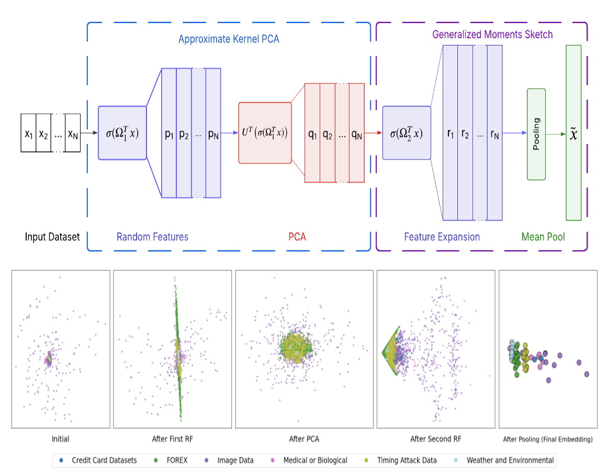
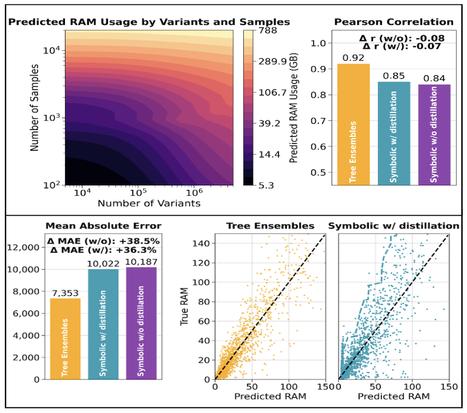

About Me
I am a research assistant exploring Distributed Multi Agent Systems at NYU's Center for AI and Robotics.
I am a final year undergraduate student at New York University, double-majoring in computer science and mathematics. I work on learned robot-swarm morphogenesis, including neural and graph cellular-automata approaches to decentralized formation control under Prof. Eliseo Ferrante.
I also work with the AGI Lab at Stanford University on feature encoding and tabular foundation models. Previously, I worked on population-scale microbiome analysis at NYU's Genetic Heritage Group and on resource-aware genomic workflows at Galatea Bio.
My broader interests include collective intelligence, distributed control, and resource-efficient machine learning systems.
Ongoing Projects
01
NavCA
NYU · Center for AI and Robotics
An end-to-end equivariant graph cellular automata controller for decentralized robot-swarm morphogenesis . I am studying how local policies can form and reconfigure target shapes without global coordinates and generalize across geometries.
02
GoalNCA
NYU · Center for AI and Robotics
A neural cellular automata approach to distributed target discovery and scalable lattice formation. The project studies how homogeneous agents can coordinate target assignment from local neighborhood information.
03
Tabular Foundation Models
Stanford University · AGI Lab
Investigating prior-fitted networks and related approaches for data-efficient tabular prediction, specifically using In-Context Learning via synthetic data pre-training.
Publications

Ray Verma , Pau Mateo Bernadó, Daniel Mas Montserrat, David Bonet, Marçal Comajoan Cara, Alexander G. Ioannidis.
preprint

Ray Verma, Míriam Barrabés, David Bonet, Marçal Comajoan Cara, Daniel Mas Montserrat, Alexander G. Ioannidis.
preprint

Daniel Montserrat, Ray Verma, Míriam Barrabés, Francisco M. de la Vega, Carlos D. Bustamante, Alexander G. Ioannidis.
AAAI 2026 🏆 Deployed Application Award
Experience
2026 — present
Center for AI and Robotics, NYU · Research Assistant
Robot-swarm morphogenesis and decentralized formation control.
2025 — present
AGI Lab, Stanford University · Research Assistant
Feature encoding, dataset embeddings, and tabular foundation models.
2024 — 2026
Genetic Heritage Group, NYU · Research Assistant
Population-scale microbiome analysis and causal inference for bacteria-virus interactions.
Summer 2025
Galatea Bio · AI Engineer Intern
Genomic workflow optimization and CI/CD pipeline development.
Spring 2025
Emerton Data · AI Engineer Intern
Low-resource language-model training using LLM with Reinforcement Learning.
Summer 2024
Embodied AI and Robotics Lab, NYU · Research Assistant
Vision-Language Navigation approaches and 3D Gaussian Splatting